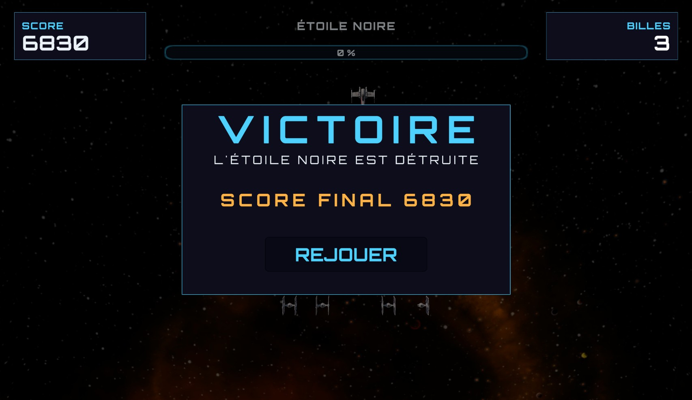

Stars Plinko
Projet individuel, BUT2 · Fan project Star Wars · Unity 6.3 LTS · Windows & itch.io

Contexte & sujet
Stars Plinko est un fan project non officiel inspiré de Star Wars. Le joueur pilote un X-Wing qui se déplace horizontalement et lâche des billes (20 par partie). Les billes traversent des obstacles TIE Fighters oscillants et doivent frapper la station Death Star pour marquer des points, en visant les zones centrales à haute valeur.
Projet individuel, IUT Informatique Graphique — 2ème année (octobre 2026). Fan project non-officiel, sans lien avec Lucasfilm ou Disney.
Jouer sur itch.io ↗Objectifs visés
- Concevoir une boucle de jeu complète avec physique et scoring
- Implémenter une IA ennemie (TIE Fighters oscillants, HP, ailes)
- Créer des effets visuels dynamiques (éclairs, explosions, fissures)
- Rendre une Death Star convaincante avec barre de vie et superlaser
- Publier un build Windows jouable sur itch.io
Mon rôle
- Développement C# complet — tous les scripts écrits seul
- Conception du scoring et de l'équilibrage (formule de victoire)
- Effets visuels : particules, explosions, flash, cracks progressifs
- UI/UX : HUD, textes flottants, écran de fin avec fondu
- Paramétrage itch.io, visuels générés avec IA
Étapes du projet
- Game design Scoring, zones Death Star, règles, équilibrage formule
- Architecture Singletons, machine d'états Playing/Won/Lost, événements
- Gameplay X-Wing, billes, TIE Fighters oscillants, zones de score
- Effets & UI Explosions, superlaser LineRenderer, HUD, écran de fin
- Build & publication Correction bugs build, page itch.io, tests finaux
Captures d'écran

Écran titre


Compétences techniques
Game design
Outils utilisés
Compétences académiques validées
Développement Unity complet · Programmation orientée objet · Machine d'états · Physique 2D et triggers · Effets visuels (particules, shaders, LineRenderer) · UI/UX (HUD, textes flottants, fondu) · Équilibrage game design · Gestion de version Unity VCS